虎尾小劇場｜三年級資源班
1
可是不大吼、不動手。
2
停一停、說不要、說原因、想辦法。
虎尾小劇場｜不想要，我會好好說
想一想
同學拉你去玩，你不想去
同學要借你的東西
同學要你的點心
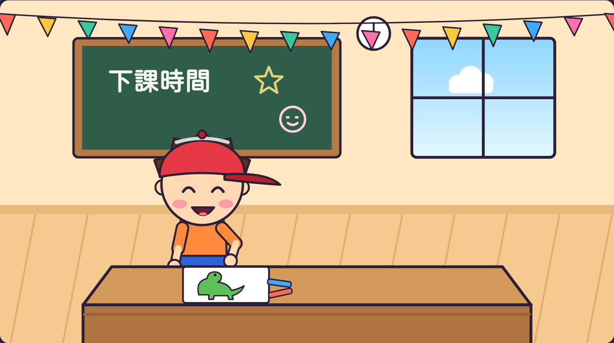
虎尾小劇場｜不想要，我會好好說
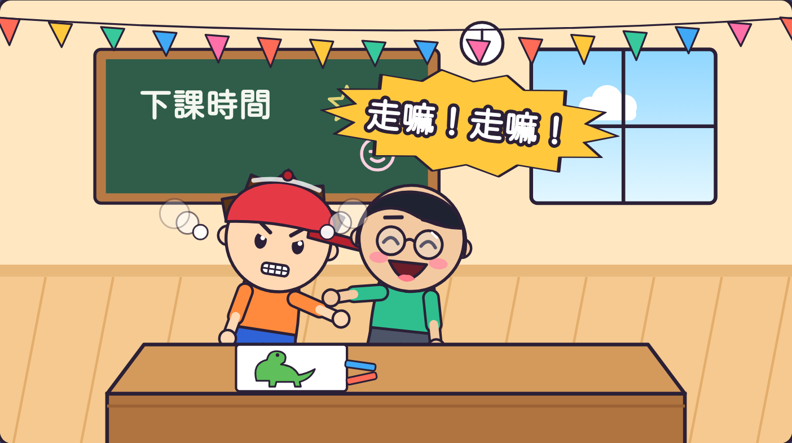
阿凱一直拉：
「走嘛！走嘛！」
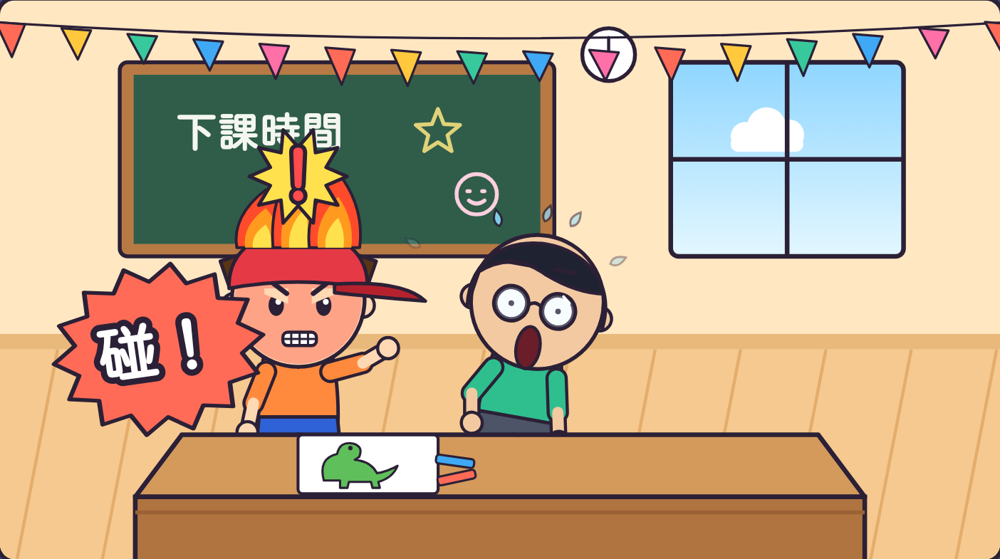
阿樂大吼「走開啦！」
還拍桌子！
虎尾小劇場｜不想要，我會好好說
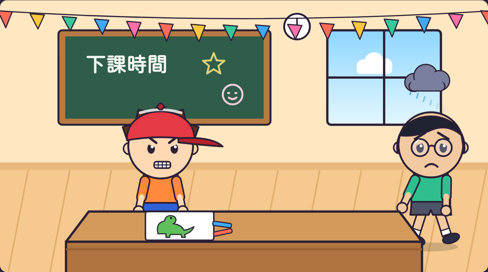
阿凱生氣地
走掉了。
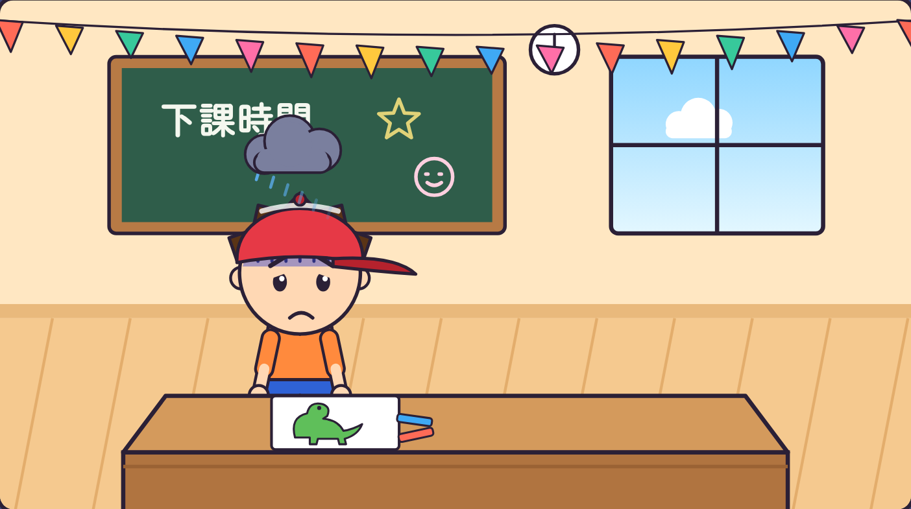
阿樂心裡也不開心，
畫也畫不下去。
虎尾小劇場｜不想要，我會好好說
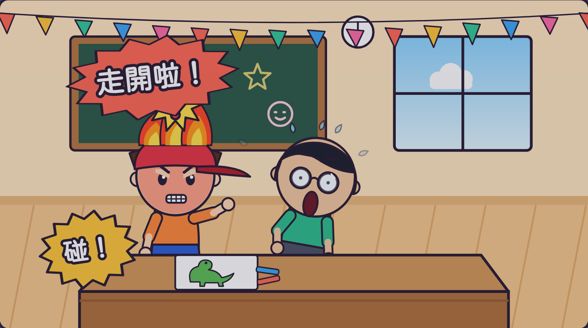
倒帶回去看
阿樂
哪裡做得不好？
有 3 個地方喔！
你找到幾個？
虎尾小劇場｜不想要，我會好好說
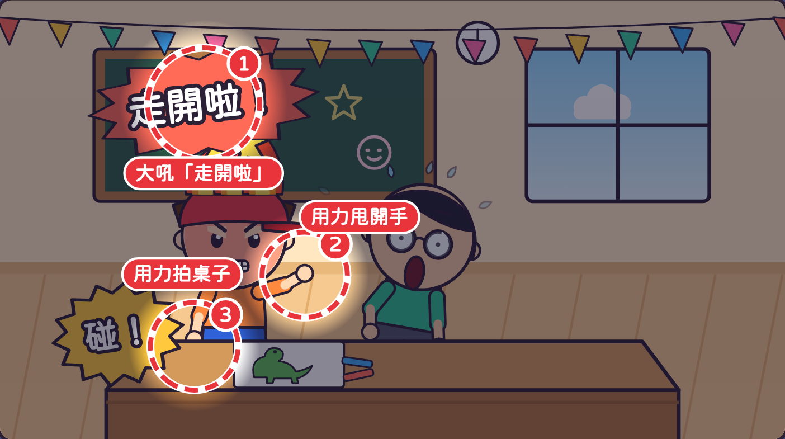
① 大吼「走開啦」
② 用力甩開手
③ 用力拍桌子
接下來學學看，
怎麼說不要！
虎尾小劇場｜不想要，我會好好說
1
吸一口氣
2
「我不想要」
3
「因為⋯⋯」
4
「可以⋯⋯好嗎？」
第 1 步
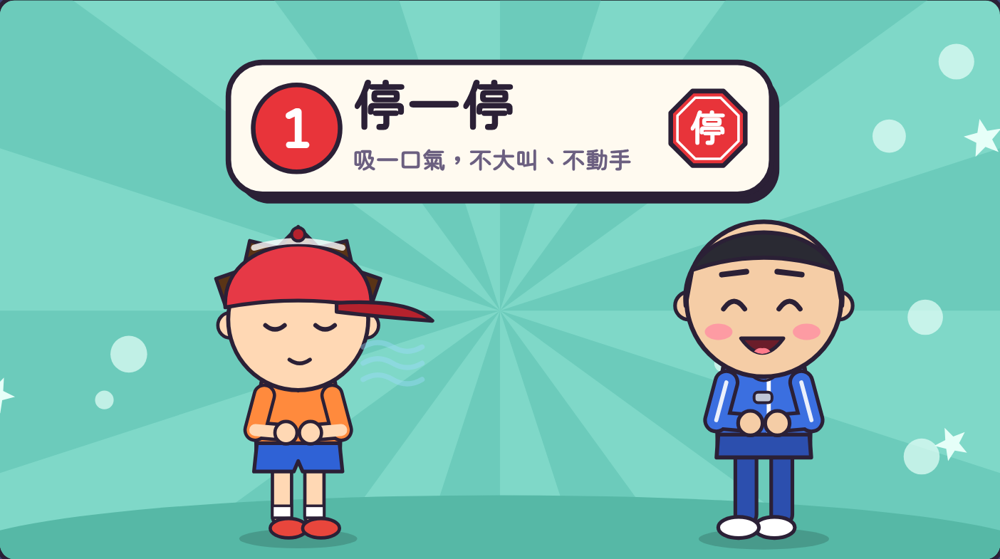
手放肚子，
吸一口氣。
不大叫，
不動手。
一起吸氣！
虎尾小劇場｜不想要，我會好好說
第 2 步
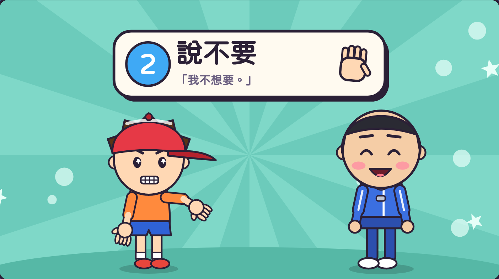
「我不想要。」
「我不想去。」
看著對方，
說清楚、不大聲。
換你說說看！
虎尾小劇場｜不想要，我會好好說
第 3 步
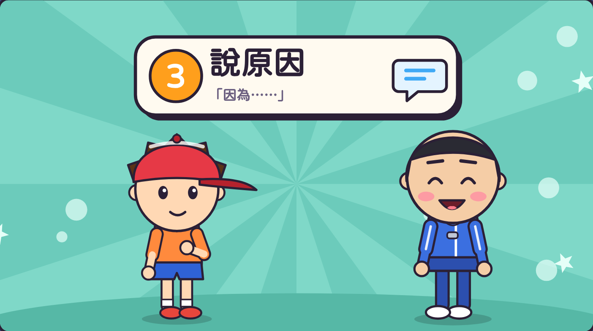
「因為我想
先把畫畫完。」
說自己的原因，
不罵對方。
你的原因是？
虎尾小劇場｜不想要，我會好好說
第 4 步
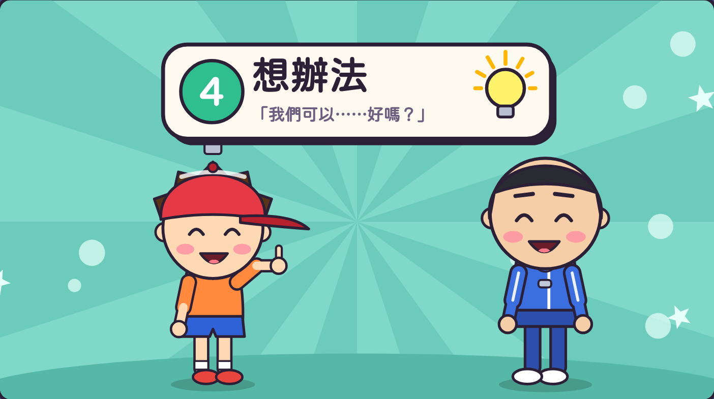
「我畫完再去
找你玩，好嗎？」
想想看！
虎尾小劇場｜不想要，我會好好說
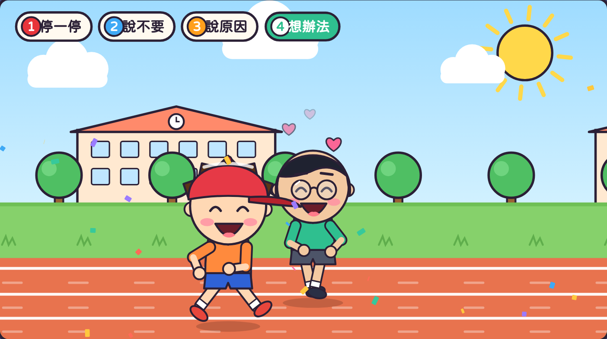
阿樂畫完，
跟阿凱開心地玩！
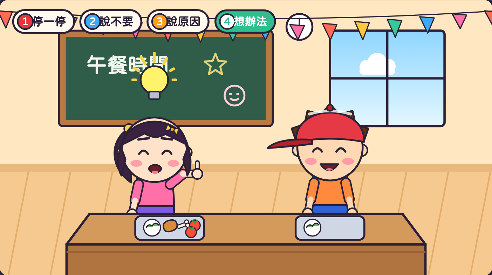
小安不想給雞腿，
分了一顆小番茄。
虎尾小劇場｜不想要，我會好好說
老師抽一張情境卡，用說不要四步驟演出來。
情境 1
情境 2
情境 3
虎尾小劇場｜不想要，我會好好說
一起念口訣
停一停，說不要，
說原因，想辦法，
不想要沒關係，
好好說就可以！
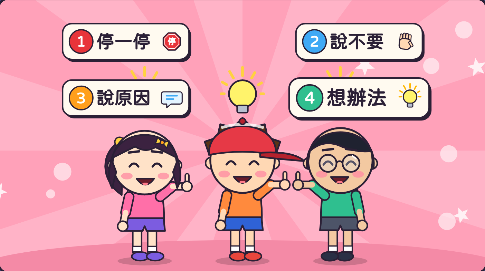
打開「好好說不要挑戰題」，
回答 9 個問題。
9 題
虎尾小劇場｜不想要，我會好好說